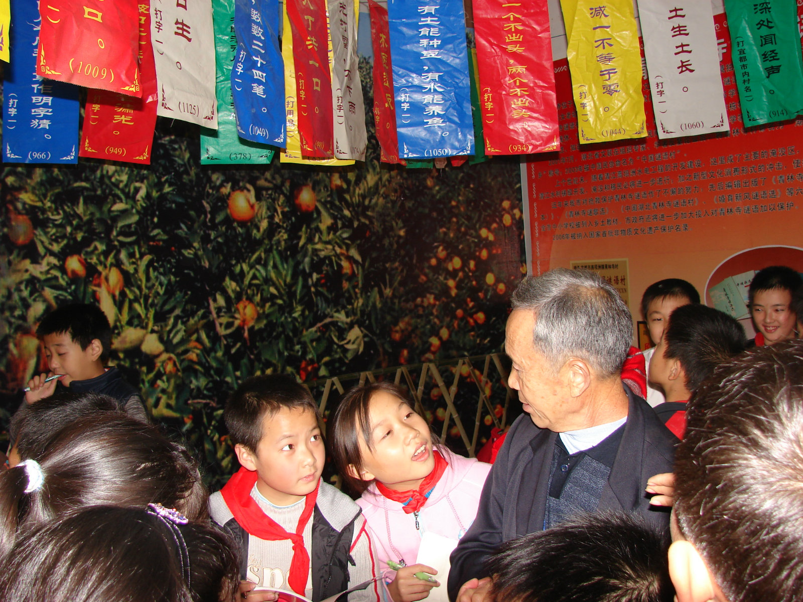
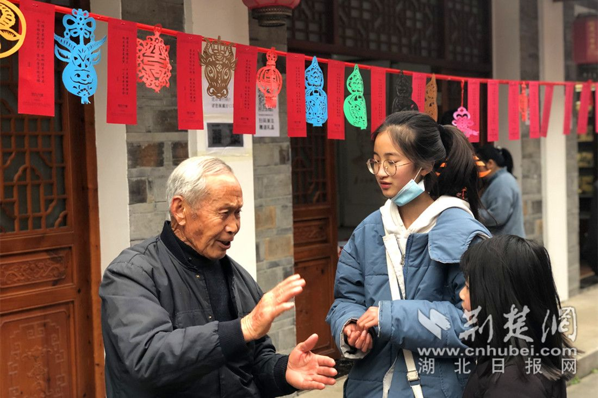

工坊简介
谜语创作工坊是青林谜语村面向社会公众开放的传统文化体验活动，每周日下午在村文化站举行。工坊由非遗传承人赵兴寿及其弟子亲自指导，通过系统教学和实践练习，培养新一代谜语创作人才。自2010年创办以来，已举办500余期，培养学员2000余人。

大师亲授
赵兴寿老先生亲自传授谜语创作心得和技巧，分享六十余年创作经验。
实践练习
从简单谜语入手，逐步掌握创作技巧，现场创作并互相猜解。
工坊流程
14:00-14:30
谜语文化讲解
介绍谜语的历史发展、艺术特点和创作方法
14:30-15:30
创作技巧教学
学习"赵氏谜语创作四法"：取材生活、巧用比喻、讲究韵律、寓教于乐
15:30-16:30
分组创作实践
在指导下进行谜语创作练习，互相点评改进

16:30-17:00
作品展示交流
优秀作品现场展示，作者分享创作思路

学员作品展示
"有翅不会飞，无脚走千里。"
"一座小桥两头低，日行千里不移位。"
"小时白又胖，长大绿衣裳。腰里藏珍珠，头上顶红枪。"
参与方式
- 时间：每周日14:00-17:00
- 地点：青林村文化站二楼活动室
- 对象：16岁以上谜语爱好者（未成年人需家长陪同）
- 费用：免费参与
- 报名：现场报名或客服热线预约（0717-4772777 0717-4880008）
- 备注：可自带笔记本，工坊提供创作指导手册